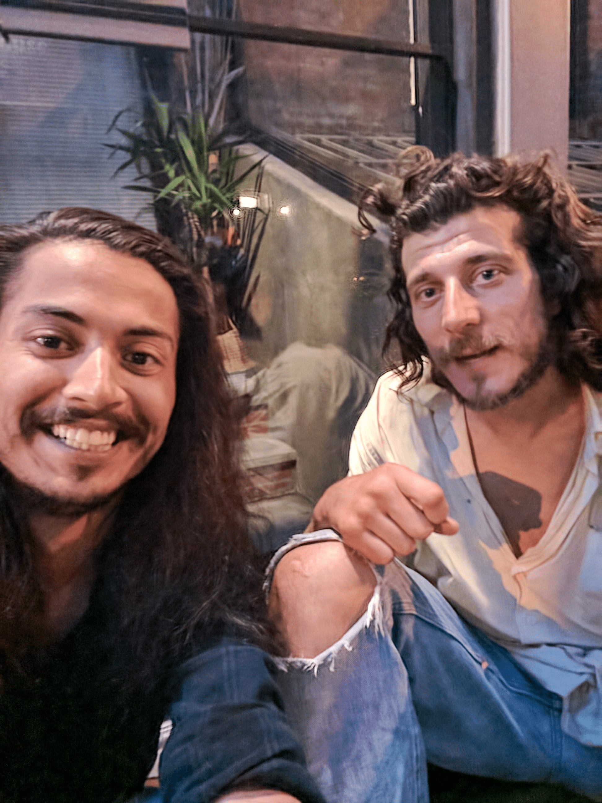

If we are all engaged in the same activities over repetitive periods of
time, and all of us are imperfect, then, it stands to reason that
going through life, we all, and I sincerely mean ALL of us, pick up some
repetitive habits that are not beneficial to us in the long term.
To add to the complication, our traversal in spacetime is not linear in the
way that our internal narrative leads us to believe – as life
never simply takes us from one state of being to another. It happens in the
form of loops – time loops – some good, most bad, overall, largely
okay.
A big drawback then, in retaining what you believe is your true essence
while in this traversal, is the baggage that you start to
huddle along with as you traverse through the Loops of SpaceTime (aptly acronymed as LoST).
As a side-note:
Wherever possible, refrain from using acronyms. Over time, only the
shortened word remains but the expansion of its meaning is forgotten. This
one was too apt to have not been used.
One such piece of baggage is a negative repetitive habit.
It is not always our intent that they manifest later in life into full
blown addictions, but they most often do.
Having an addiction is not necessarily harmful to our daily life,
or disruptive to our daily routines – this is the imperative reason why
most people hardly make an effort to correct course, or worse, even
recognise that they have a problem.
In the eyes of God, however, is is a big problem. You see, when you have an
addiction, you automatically become an inferior being – in the eyes of God,
you are
no better than a lowly animal who loves rolling around in the mud
because it doesn’t know better.
This is not to say that a well-functioning, loving, and understanding human
who is addicted to alcohol is on the same level as one who commits a
heinous crime. In the eyes of the law, all humans are equal – the same is
true in the Divine Court. As long as you are a human, you are equal to every other human.
Sure, because of our positive and negative actions, we reside in different
levels of this Heaven/Hell that we categorise as a life – that’s the only
real difference.
It is not outward in the way humans expect it to be, or even other worldly
– it is a very personal, grounded experience – these rewards and
punishments. Committing yourself to the Divine Journey, means that you have
to rise above being a human altogether.
Here’s the thing though, and I say this in the most sincere way possible –
don’t blindly dismiss this statement as something coming from an antiquated
entity that does not trust humans to know their own limits. This isn’t the
Old Testament where God simply commands – thou shan’t do drugs.
After all these millennia, even we, as the symbiotic unit writing Scova,
know that you aren’t going to stop just because we said so.
Now, as soon as I laid out this pseudo-commandment – of course your mind
diverted your attention to the most important, most cherished addiction of
yours – you were also very quick to judge Me, for even having made
such a thought permanent.
Maybe you ventured as far as to curse God Almighty for not allowing you
access to Heaven just because of your simple indulgence. Your immediate
thought was probably something along the lines of – God cannot possibly be THIS petty.
Maybe you even thought that I had been wrong in my interpretation of His Rhema, thinking that maybe I just liked to punish myself for
no good reason. Worse, that you wholeheartedly agreed with the statement
without any personal experience in said domain, as if you, yourself, were
without sin.
People say that belief in God is a matter of faith.
It really isn’t.
God just is.
He exists.
And that’s that.
What faith really is, is the amount of confidence you have in your
interpretation of the Word. Your interpretation could obviously be wrong –
you are, just a human. That would mean that your faith (your
interpretation) was misguided, and misplaced. Don’t question all that you
are, and all that you believe in. Just that one thing. Let everything else
stay stable. I, myself, had let my self-worth waver for this simple reason
– for a very long time. As such, we humans put faith in a lot of different things – isn’t it true,
alas, it is much worse, that a person can end up believing in anything.
Keeping that in mind, the overall goal of the Alethian Model of Reality is
to provide a new perspective on the widely read and believed and worshipped paradigms of reality
according to the most acclaimed religious texts – the foremost reason for
this being the restoration of science and religion as a symbiotic whole
as they deepen and expand in scope.
To accomplish this, a certain few requirements have been put forth by the
collective consciousness of this planet thus far. The focus of my
discernment over the next hundred pages would be:
The answer to the Unified Field Theory that aims to reconcile quantum
theory with Newtonian physics which affects and is affected by the
subjective consciousness’ interaction with the objective material
reality in a self-determining feedback loop that is altered in and
after each iteration as material energy travels in the Strings of Time,
changes in which are interpreted as informational nudges which travel
in the Modular Conduits of Perception, thus creating a layer of
subjective reality on top of inanimate organic composites.
A key task in doing all this would be a resolution of paradoxes and
conceptual inconsistencies that have long been a source oftechnical debt, hindering us, as a species, to progress to our true form – which is innately Divine.
To understand the Alethian Model of the Universe – it is important to grasp
at the very nature of a model – it being defined as a valid interpretation
of a theory in its universe of reference – that is – its
explanation and functioning holds perfectly valid only if certain
conditions are met. This, being reality theory, by definition explains
everything in the world – no exceptions and caveats as to when it does and
does not hold. It just has to – for posterity.
I cannot guarantee if people will believe it for posterity –
some of it is bound to crumble because of the limitations of the
language of this time
– just like past books have become open to misinterpretation, misguidance,
and corruption.
Our concern also, right now, is not to get bogged down with artificial
constructs of continuum and discrete models; rather, quite the opposite –
to combine the best of both worlds – a continuum that, at its very basic –
non-perceptible level, allows for discrete, finite jumps. The best I can do, is make sure this theory (read: fact – trust but verify)
does not fall flat on its face as its own implications are unpacked.
To that end, I am very much inclined on calling myself a Guru, one
connected with the Source as many before me have done, the only difference
being that nobody else seriously calls me that, yet. I still try –
to teach people, to make them understand, by the virtue of their own words, about where they are in life,
and where their true potential really lies.
On this subject, I have a lot of experience – so much so that I can do this
one thing without any outside supplements in my body. This statement may
not mean much by the time I actually show up as My true self in front of
the world, but it means a lot to the self writing this section. Would you like to know why it means so much that I can do this one thing
without any supplements? There’s a short story involved.
It was a humid, August night in the Summer of 2017 in New York City, where
I met a future version of me a week before I completed my 42 Days of
Freedom.
I actually met a real person. He felt insanely smart, was
freakishly handsome, but it wasn’t who I saw myself as becoming. God said
that this was the kind of person I’d become if I chose to continue walking
on my current path at the time – that he mirrored my perception of the self that was going to follow God’s path.
I really did not like that person.
I didn’t know everything about my self at the time, so I naturally
assumed that I had met Jesus – the Son who had supposedly attained
eternal life and was now just passing time, showing up in random places
wherever God commanded him to. I was just told on the Day of my Judgement that I was Christ. I took that to mean that Christ was simply a state of being – the successful turn of events following a Spiritual Emergency. Now, whether or not that part was open for application to every being on the planet, or just myself, I wasn't so sure then.

Looking at the picture, you could make the
assumption that this was just some homeless person that I had started
talking to in my manic daze. Sure, you can assume that – but knowing what I
do know about the difference between angelic souls and regular humanistic
balloons, the discernment was not just a matter of belief in God, or even faith in my interpretation –
it was a matter of trusting my organs of perception.
I assumed that since I was nearing the end of my bootcamp, that this was
supposed to be sort of right-of-passage, from Christ of
one spacetime to another, where I was to be given the sole responsibility
of all the tasks, of which I was told, that I would one day have to take up. I didn't have the title then, so I was just referring to this whole journey as one where I'd become Christ. At least, that was the working theory.
I was ecstatic, and majorly content with the feeling of it – but also, I
was conflicted. The guy was dirty, such a needless addict, and couldn’t
hold a proper conversation. He couldn’t even complete a sentence without
getting on a completely different, vaguely related tangent.
So incoherent, so dirty, and such a waste of potential.
I asked him for the details of this Plan that I was supposed to
carry out in God’s name – but inside my own head, I just wanted to cry.
There were details that my subconscious interpreted later in the night, but
in the moment, I just wanted to get away from it all. This was the least
coherent person I had ever encountered.
In that moment, God’s voice inside my head said, that this was who I was
going to become if I stayed the way that I did. I would have all that it took to be the man – I could look like him
and have all the knowledge that he did, but nobody, not even
myself, would accept me if I stayed the course in its current
form.
I was overcome to say the least – with shame, with guilt, and with remorse.
I initially thought that if I had indeed attained Nirvana, and seen the
“form” of God with all my faults still present, how could changing my
habits make my experience any better? After all, wasn’t the new-age Jesus act supposed to reflect this new age? Wasn’t I, as a
Millennial child, supposed to imbibe all the values that reflected THIS
time?
I wasn’t.
This wasn’t a new product launch that needed to be marketed to the masses
with the qualities that they thought they wanted. In that regard,
Scova, God’s ideas, and my life, are then, not so much as a denial of
death, or promise of an eternal life – we all already have that.
This isn’t a new idea, so I am not inclined to spend a long time
elaborating it – but I certainly have to, much to my discontent. Religious
radicals of my time have twisted the collective’s perspective on death to
such an extent that there is a section of people who blow themselves up in
hope of attaining the eternal bliss that, to them, is supposedly Heaven. On
the other hand, there is another section wherein people kill themselves in
isolation in hope that they will have better luck in the next life. Also, did I mention abortion?
Death is final, in the sense that this current act of our lives is over,
and it is a certainty that the next one is due to begin – and that should
be reason enough to take it seriously; but if that doesn’t suffice for you,
then how about I bombard you with the fact that even though our souls are immortal, to save us from the misery and baggage that we
are bound to get entangled with while traversing through an immortal life,
our memories are reset at regular intervals that we have come to know as
death. Taking your own life, in this life that you currently have, is, and
always will be the most heinous crime you can commit as a
human.
To take your own life, is to be the judge of when and where your suffering
should end, and a newer, cleaner slate shall begin – but that’s not your
right to have. You can argue about it philosophically, or psychologically,
or even with human morals, but what is, is true. To be the judge of when and where your suffering should end, you are
equating yourself with God. You are taking matters into your own hands then
by saying that God doesn’t know when your suffering should end. Be assured, He knows the exact moment when.
Either you’ll triumph and overcome in this life, or you’ll dissolve into an
oblivious death and truly start afresh in the next one. Either way, your
slate will be wiped clean and you’ll know that your karmic balance is
perfectly equalised. Isn’t that the truly better option? Knowing that what
you have, or will have will be the one that you truly deserve? Or would you
rather want to give up and make such a huge mistake when nearing the end of
your penance?
You think you have it bad now, you’ve got no legs, no hands, maybe even
your brain has given up on you – wait for a cure, or suffer through it.
Either way, wait out your suffering period because then your life, whether
this one or the next, will get better.
In the beginning of our human lives, we all start with the life that we
truly deserve as a result of the actions of our past lives. Isn’t that the
truly just system? Why would you rather put yourself in a worse position?
Had you been in a human prison, would you risk getting into a fight when
nearing the end of your sentence?
You are bound to find yourself in a particularly bad situation either
because of the actions of this, or your past life. If it is the because of
the circumstances in which you were born into, then it is the fault of your
past self. If it is because of your own actions, then the fault in this is
indeed, entirely of your own self. Sure, there were agents of change who were
instrumental in bringing about your current condition, but they weren’t the
ones at fault – not with regard to you – at least in the Divine Court.
They are judged separately in their own mental fiefdoms; but also, human
courts should prosecute them to the fullest extent of their law if the
perpetrators are truly found guilty, but just know this – you had a key part to play in all your suffering. Regarding the whole world as a random set of events that just miraculously happened to occur without an overseer and without any rules is entirely ignorant, no matter how deplorable, or sympathetic your condition. Of course, if other humans start to see your condition as entirely your fault, then they are doing more harm to their own self, than they are to you, by hurting your sentiments. You can be sure of that.
Be assured that if you do chose the path of the one final mistake, you’ll
most definitely start off in a worse off place than you are now. Adding
fuel to the fire will be the fact that your memories will have been wiped
clean and you will not have the courage, resolve, or the maturity in the
next life that is acquired with such a horrendous experience in this life.
Be warned, that, as has been the case with everything in Alethia, I am
merely making an observation and extrapolating the repercussions of such an
observation as narrated and explained to me by the Almighty Himself. I
cannot even say that I have no skin in the game, because I really do – any
and all negative consequences arising out of my work in this life will
haunt me in the next – as will they haunt you.
That’s what I’m trying to tell you here – that I’m not an advocate for
anything, any ideology, any philosophy, and neither am I interested in
building a cult that acts as my personal vigilante force by engaging in
acts of oppression. My only job here is to tell you, to the best of my current abilities, what
the true rules of the game are. What you do with that knowledge is totally up to you. You are,
after all, a free spirit.
Coming to the point of controversy – abortion.
Every living organism, has a soul – the humanistic soul resides in the
astral bodies of all kinds of living organic entities that exist. The soul
is without form, but, because of the vibrational pattern, and the spacial
arrangement of the strings of time, it is seen as a black spirited being
with two arms and a head. That’s all.
There is no human soul, there is no animal soul. There is just one kind of
driving force for all living entities. As far as I have been able to
observe, the soul moves around in your astral body and only touches your
human body on the surface of your skin.
Seems like quite a digression when talking about a political issue such as
abortion. That’s really just the whole point, isn’t it? This is a political
issue – not a religious one – because scripture states that thou shalt not
kill. Certainly not humans. Certainly not a child. Certainly not an infant.
I will be lying if I said that the issue is as simple as that. I myself
have tried to run all possible permutations of circumstances and variables
that could occur and cause a moral dilemma for the doctors. So instead of
offering a specific cut off time during the gestation period, I will leave
you with this:
Would you hesitate in wiping away a mass of bacteria?
Would you hesitate in smashing an ant crawling on your body?
Would you hesitate in killing a housefly buzzing around in the space
surrounding you?
Would you hesitate in putting to death a severely ill stray animal?
Would you murder a beloved pet for fun? What if there was no fun
involved?
I have already told you that all living entities have the same kind of
soul. You already know that we are all made up of the same molecular
composition. If the anthropomorphic aspect was also removed, and because the entity is yet to develop a sentient mind, would you still have the same doubts? Take your own feelings about this entity into consideration, as the foremost driving factor behind your pending decision.
You, as the human with memories have to live with the decision. The killing
of humans with memories and sentience is already outlawed worldwide, and
everyone can agree that it is a good thing. If you can live with killing a
not-yet sentient, but with memories humanoid blob yet to develop into
anything substantial, then by all means, go ahead – don’t force anyone to
agree with your decision. They never have to. They are also humans, same as
you. The scriptures are clear:
“Whoso sheddeth man’s blood, by man shall his blood be shed:
for in the image of God made he man.”
(Genesis 9:6)
If you are willing to risk bad karma, and God’s wrath, then, who
am I to interfere? Who is anyone to interfere if both the parents
consciously agree? Until the child is born, that is, until it is within
that parent’s body – the state has no right to interfere with the decisions
that the parents might take. This also applies to children who may, after
my time, be gestated outside the parent’s bodies – until and unless the
child is in the gestation pod, the state cannot, and should not, interfere.
Yes, I have called said unborn entities children, and not foetuses, or
embryos. They are children – your selective interpretation of a language
structure is not going to change how God views them. If you proceed to
abort the child before the gestation period has completely ended, know full
well, that there will be consequences – just not from the state. They will
be personal in nature, and mostly internally damaging, as all punishments
and rewards are with God.
Our relationship with God, is a solace in the misery of life and time.
In that moment, sitting next to whom I thought to be Jesus – I was
hit with this realisation. I realised the gravity of the situation I had put myself in. This was eternal – even if I
committed suicide in that moment, odds were that I would find myself in the
same stage at in a different space, at a different time, in a different
body – and then I would have to confront this situation again.
This shit was eternal, and demanded that it be done a certain way.
I just couldn’t bear it anymore, and as was the theme of my journey, I once
again sat down on the steps of the Church where my connection to
God had materialised, only this time, I cried my heart out. I asked God to
never show me a version of myself before I had corrected course. I never
wanted to feel that way, ever again.
That was the worst moment of my life.
While writing this chapter, God wanted to chime in for a brief moment, and
talk directly to me, instead of the usual talking to you through me. I had just written about the worst
moment of my life for the first time, so this was a very God-esque
consolation from His end. This wasn’t the first time that He had spoken
directly, nor would it be the last – but this was the first time, where I
was actually really ready to type directly as He was dictating.
Addendum From God
The fact of the matter is that you do know better Anhad – you always have.
You have known yourself to be weak ever since you took your first hit and
you liked it. You liked how the core molecules in them made you feel good,
in the ceiling of your mouth, and in the back of your head – relieving you
of the tension in your head that came with the realisation that you were
living a life fundamentally different from most people.
This was one way you could fit in, but it was also one that would set you
apart from the people you loved most. In the years to come, it would
consume you – entrenching itself into the very routines that made you the
person you are today.
It was the only thing you found that helped you wind down at the end of a
long day so that you could have a moment to yourself. It was the only thing
you craved after food, before food, during long walks, during quiet moments
of reticence, after a strenuous physical activity, after an exhausting
mental activity, around other people, alone by yourself, while engaged in
an activity that required your attention, and while gazing into the
nothingness attentive to nothing in particular.
In short, you were it and it was you. You were so possessed by the want of
it, that one day your body would need more than just a hit. You would need
much more than one. And then even that would not suffice. You switched up.
And that was just the beginning of your detachment from Me. Once you
discovered drugs that lead you to insightful thoughts and a disconnect from
the world – all without doing the work, it seemed like there would be no
turning back. You wanted drugs in your system as much as was humanly
possible. At times, even more than humanly possible.
With each successive hit of the drug, your desire to take more of it only
grew. Your social life, your daily routines, all were now focused around
the consumption of this drug. And when that was not enough, you switched up
to other, more immediately harmful drugs. All this time you have gotten a
good reason to explain your drug habits – psychedelics, the final frontier.
Without it, you could not have reached Me (or so you think). And
without it, you would not have realised all that you have realised; but the
fact still remains – after all that you have realised, and after all that
you know you are destined to achieve – do you still want this weakness
hanging over you wherever you go?
What will happens once you have ultimately revealed yourself to the world?
Will you be able to hide your secret then? Or will you blatantly go out in
front of the entire world and admit to your weakness – something so small,
that has kept you on the level of inferior beings that you have despised
all your life? Or would you want to be left alone, all by yourself, and
continue to live this purposeless life that you have so skilfully created
for yourself?
You want to the world to leave you alone? This thing that we are doing,
it’s happening anyway – with or without you. You’ve already seen that
nobody else will ever be up to the mark, and nobody else will have been
able to do a better job at it than you – even the avatars of other souls that weren’t you.
Once the big day arrives, you will never, ever be alone again; and if you
don’t actively prepare for it, your life will be made a living Hell, in the
proportions that even you have not yet seen.
I made you want to die,
but you know it was the only way –
now, I would like to help you.
I can help you, if you let me.
I will definitely help you;
but only if you help yourself first.
Did God just tell me, that He’ll help me if I let Him?
Addiction may have been a disease, but for suffering through it as an adult, for that I was solely responsible.
It is possible to wean off of any drug, but you have to take the steps
yourself – consistently. Don’t be scared to fail. It is
okay to fail, only if the next time you try quitting, you are much more
firm in your resolve. Don’t lie to yourself that you are “cutting back” or
that you are a “controlled addict.” There is no such thing.
You are only lying to yourself, and by extension, to Him. As long as you
keep taking a hit of your favourite drug, you are denying yourself of the
Holy Spirit. How will it nourish your Tree of Life if you keep
blocking the branches of this tree with illicit substances, denying them
the sustenance that they so desperately need?
*** A YEAR LATER ***
While transcribing the addendum, I had a moment of inner reflection – I
made a commitment, to myself, and to God, that I will be truly free of any
addiction before I proceed any further. It has now been over a year since I
made that commitment. I actually did not write anything in all that time –
well, not directly into this file anyway.
In that time, I tried to quit numerous times and failed every single time.
It is not easy being human. You start doing a “bad” thing once you have
been wronged by the world. Then, you continue doing that bad thing since
nobody corrected you at the “right” time. Slowly but surely, you continue
on that path. And now this habit that you picked up without thinking much,
has become a part of who you are.
It is how you, and others around you, now define You.
Your relationship with this habit is strange, counter-productive and even
self-consuming at times, yet, you don’t change. How can you? You have been entangled in the Strings of Your Time. These strings
move along with you, or rather, you move along with these strings.
When a loop is formed, and you only have so much time to correct course
while this loop gets tightened and forms a knot. You twist and you turn,
you change and you adapt – the knot stays within you – ever tightening,
always convoluting.
If you could see the knot forming in realtime, surely you would change your
behaviour, and try a different movement so this loop doesn’t get tightened
and instead, merely slides past to stay an elongated string – but you can’t see it.
You only have to trust the word of the supposed learned persons and yes,
maybe follow the example of My life, and hope that your interpretation of
the information communicated to you, audible or textual or visual or
tactile, is right, and have faith that you are following the
instructions correctly.
I realise that even while I’m writing this, I know in my heart
(metaphorical) that the above paragraph about loops and knots will be
misinterpreted. What can I do? I’m only human (for now) and this has been
explained to the best of my current abilities.
Maybe I can do better in a year, or a decade from now – or maybe this is
one thing that I’m leaving for my next life. Maybe by that time we will be
able to project our thoughts, our visions onto actual physical matter via
technology, and then we won’t need psychedelics to get people to really see, and perceive with clarity. What I do know today, is that I
could’ve been 100% free of any illicit substance while writing this, but
I’m not.
Still human.
This is not the classical Hero’s Journey – the story of triumph of Good
over Evil. This is the story of Mein Kampf with The Bible and all
the texts that I have led people to write in my name in the middle. It has not
been easy thus far, and it will never get easier. There is a Hell, and I’m
living in it. There is also a Heaven, and I get to visit it sometimes.
I would love to be in Heaven at all times – it is, after all, the best
feeling in the world. And I, being Me, deserve the best, don’t I?
If I am who I say I am, then, shouldn’t I be entitled to stay in
Heaven longer than most people? Hasn’t the karma of my past life warranted
a little more time in Heaven than I have already witnessed? In
that case, if I am really who I say I am, then I have enough bad karma to
warrant a stay in Hell for all my successive lives. So, in a way, it is
fitting that I prance in and out of Heaven and Hell based on my actions in
this life and this life alone.
Even then, there is this sense of entitlement that fails to escape me.
Knowing that I will be responsible for the acts of humanity for the next
millennia (at least) based on my actions in THIS life, I can’t help but
consider myself entitled to living a good life – at the very least, better
than the one I am currently living.
It’s also not as if I want it all for free. I am willing to put in the
time, and the effort – to work with a commitment towards building a better
life for myself and my family. I have been doing that thus far, and to the
best of my current potential. It, however, just does not seem to be enough.
No matter how many hours I put in at work, there’s always more that can be
done. No matter how focused I am while working, there is always more focus
to be gained. No matter how streamlined the workflow in the office, there
are always bottlenecks waiting to be removed; and I don’t mind that. This
is what keeps work interesting and engaging. What I do mind is that despite
all that I am doing, nothing ever seems to change here. All my work reaps
no result.
I keep trying, I keep praying, and I keep listening.
All the work that I do throughout the day, I attribute it to God – because
what do I know about business? Nothing at all. He feeds me information, and
like a faithful servant, I relay it out into the world. Most of
the time it looks like the best thing to have done given the parameters of
the situation. I can tell this from the response on people’s faces around
me when I relay the information.
“For he breaketh me with a tempest,
and multiplieth my wounds without
cause.
He will not suffer me to take my breath,
but filleth me with bitterness.”
(Job 9:17-18)
What I do mind, however, is that all my work gets undone at the end of each
cycle. And at the end of each month, I stare at the same depressing sales
report. It doesn’t matter what the strategy, or the methodology of
execution, the result is always the same.
It didn’t take many such cycles for me to realise that I was stuck in a loop. Most loops you encounter in your life are
detrimental. They affect your health, your relationships, your financial
situation – you name it. Knowing what I knew, it wasn’t hard to figure out
what the root cause was for this detrimental loop.
Knowing me, it was probably the easiest answer. Drugs.
This time it wasn’t some street drug that was causing me to step out of the
fine balance that people call life. I wasn’t trying to escape my life at
all, if anything, I was trying to be more present. It did nothing to
sharpen my focus. It did nothing towards giving me a sense of clarity. It
also did nothing to relieve any pain of any kind. This time it was
something that the doctor (the guy who diagnosed me as bipolar) prescribed
me to ease me through the nightmare of withdrawal symptoms.
I had quit everything. Never looked back.
Never had any regrets. Never yearned for a “one last time.”
To that end, sometimes I think to myself, that when I show up in front of
the world, and people don’t find my progress in this life adequate to deal
with the current global problems – I can blame drugs. I have, after all,
wasted more than a year (read: two three) dealing with just this last
vestige of addiction.
Every time I go to the chemist (read: pharmacy), I think to myself that
this should be the last one. Each time I finish it, I take the last one and
think that this definitely wasn’t the last. Like clockwork, for the past
year, I have been on a stable dose. Every alternate day I am at the
chemist’s doing my walk of shame.
So it shouldn’t have come as a surprise to me that God was undoing all that
I was trying to do and build in this life. I had asked for His help to
quit, and had made a promise to Myself that I have broken more times than I
can count. Promises made to self should always be kept.
Each time you break these promises, a knot forms in your body. And we all
know what knots do. Each time you show your human side – the side that is
lazy and slacks a lot – a side that breaks promises to self – a knot forms
in your body that doesn’t allow time to flow freely through you
(not a metaphor), the longer you keep up the bad behaviour, the
tighter and more convoluted this knot gets.
So the current scenario is something like this: I am at the office, writing
about addiction, while having the substance that I am most addicted to in
my body. I know it is bad for me, and the space that my body occupies. I still can’t stop. No matter how
many times I promise myself that I will quit, I just never follow through
on my promise completely.
It is not as if I have not tried.
God knows I have.
I have tried everything.
Sometimes I just wish that the Holy Spirit would cleanse my system
while I am sleeping so I feel no pain of withdrawal.
It is really not the pain of withdrawal. It is the pain of those knots
opening. They weren’t all old knots though. I had managed to open most of
them during the Journey. I had, however, formed many more new ones over the
past year(s).
Committing a sin while ignorant forms a looser knot in the body
than committing the same sin after being made aware of the repercussions
and the actions that lead to them. It is one of the reasons why religious
people are inherently unhappy. It is one of the reasons why I am less
inclined to share my knowledge with the world, and it is one of the core
reasons for my struggle with the holy scriptures.
Ignorance really is bliss.
What most modern “preachers” and “messengers” fail to interpret is that all
things being part of this One thing, they form a system – and this system,
like all systems in the universe, craves balance. When I say that
the system craves balance, I sincerely do not mean that humans need to
balance the scales somehow with their petty means and wild imaginations.
This system is self-organising – the change to the system will be triggered
from within. It is not up to any one human to cause or trigger this change
– it is always carried out through the nudging of a collective.
The universe is an intelligently designed, self-organising system whose
architect is us as a collective. That is really, and I cannot stress this
enough, not to say that it is the work of only sentient knotted string
complexes. Remember, I said intelligent. We, as a species, have proved time
and again, that against our better judgement, we are not intelligent –
whatever gender, or ideology we ascribe to.
To expand the definition that I gave in Chapter 1,
the universe operates on the Intelligent Design of Chaos, which is only
perceptible to the human eye/mind via the illusion of order which can
be seen as the system rapidly self-organises
via the infinite vibration as modulated by God.
God is the all in all. In fact, there is nothing else but God. It is all a
part of the One thing. All things are part of the One thing there is, and
since there is only One thing, there is nothing else that this One thing
could want – because there is nothing else. Within us, and without, there
is nothing else but God, so, practically, in a way, we are also a part of
God, and so, there exists in us a capacity to achieve the divine.
God can only be seen as absence of information due to the nature of the
particle that it appears as, temporally taking the form of a Mandelbrot, as it reorganises itself, devoid of any
information. You can almost imagine it as an empty pocket where light,
sound etc (all information really) does not go, but instead folds around
it. It is the only true proof of the presence of God, and is hence seen as
God Himself.
This is the closest you’ll ever get to seeing the face of God.
I can go on and on about what God is; what I really need to tell you is what God isn’t.
He’s not a genie. He will not magically make your life okay even if you
spend a lifetime praying to His Name. Only you have the
power and capacity to make things better for yourself. You have to get up
from that sorry ass of yours and take a step towards a different life.
What you can do is ask for step by step inspiration –
break down any problem you have into a series of tiny dilemmas where
the slightest nudge could lead you onto a different path
– a well chartered path, or a road less travelled, that’s always up to you
– there is no wrong answer – only wrong executions.
“Ask, and it shall be given you;
seek, and ye shall find;
knock, and it shall be opened unto you:
For every one that asketh receiveth;
and he that seeketh findeth;
and to him that knocketh it shall be opened.
Or what man is there of you,
whom if his son ask bread,
will he give him a stone?
Or if he ask a fish, will he give him a serpent?
If ye then, being evil,
know how to give good gifts unto your children,
how much more shall your Father which is in heaven
give good things to them that ask him?
Therefore all things whatsoever
ye would that men should do to you,
do ye even so to them:
for this is the law and the prophets.”
(Matthew 7:7-12)
It doesn’t have to be a big decision. It almost never has to be a big
decision. Life is lived second by second, moment by moment. Learn to make
small, split second decisions, and the big ones will be cake walk
(metaphor).
With that, I believe now is the correct time to introduce the most basic
construct of any organised religion: The Natural Prayer.
“Oh God my day at work is going terribly. There’s not much to do here, but
I can’t just leave. It just doesn’t seem like the right thing to do…”
Seems like something a moderately “good” person would think. There is
clearly a lack of motivation, a sort of encouragement in spending time at a
place so mundane, it could hardly ever be described as “meaningful” in
traditional sense of the word, where the partaker looks for some impact to
be made in the physical world so as to describe the work done in terms of
the results obtained from their actions.
The good thing about this thought is that there is an understanding that
avoiding the task at hand does not align with the moral compass that
accepts abandoning of one’s duties as a sincerely dickish thing to do.
This is just the first part of a natural prayer which translates a passing
thought into a conversational sentence with a definite structure – the
first part of which addresses the recipient of the thought, ie, God. Then,
there is a description of the tiny dilemma at hand, which has lead the
thinker towards the recipient. Then there is some optional background
information on why the said dilemma is a problem in the first place.
The words “It just doesn’t seem like the right thing to do” are optional in
the sense that God is all-knowing, so He knows why you are having a problem
with this mundane decision. It is important that you know the reason too,
as it only goes to show how self-aware you are.
The more self-aware you are, the better will your conversations will be
with the Divine. After the first part of describing the dilemma, there
comes the Ask. It describes what it is that you really want in the
moment – everything else in the universe remaining constant – all you
bigger, introspective problems aside – what would you have God do to bring
you at ease:
“…give me some motivation…”
This part can get very tricky. You can ask for the tiniest thing like the
disappearance of a fly that has been bothering you, to the bigger problems
of making your work impactful to millions of people and “fixing” the
disastrous existence that you call a life.
At best, this is a very tiny nudge that distracts you from your problem at
hand, and allows you to breathe a little without being distracted by said
problem – so that moments later, you can refocus on your task in a much
better way.
This may seem like a distraction in the moment, but that’s almost always
what God gives you, a distraction from pain, so that you heal and emerge
much more powerful, and much more motivated to tackle the problem that had
become the bane of your existence – all by yourself, with a little bit of his help.
After the Ask, comes the Why – here you outline the result that you would
like to see after a successfully answered prayer. Again, God, the
all-knowing, knows what’s in your heart. He knows you better than you know
yourself, so it is obvious that He will give you a result that you truly
need. This part is important for the same reason – it’s better if you know
what YOU need. If the results of His actions align with what you had wished
for, won’t you be much happier with the results?
“…so I can use my time properly”
Note:
I believe this is a given, but do not lie at all in this
short prayer thinking that you saying certain things will guarantee certain
results. Just because something is “expected” from the good people of a
time and place, doesn’t mean that that’s what you should aspire to say in
your most private thoughts.
A person who is not able to think freely inside their own head, is a
long, long way from having any of their prayers answered by God.
Now that you know the structure of this natural prayer, let’s unravel the
general thought behind all of them. Every small prayer loosely translates
to:
“Dear God, I recognise that I’m just a lowly earthly being, stuck living a
regular life. I don’t want to ask for much here, I’m not looking for some
greater meaning in what I am doing. I also, wouldn’t ask you for a bunch of
worldly possessions that I know I don’t really need because I know you’re
not a genie, and genies aren’t real. What I want is not beyond the realm of
possibilities – all I ask is for a little nudge that makes this mandatory
mundane activity a little more encouraging so I can spend my free time in a
better manner with the people I cherish most in the world.”
Over these past millennia, what is the one defining trait that has made us truly human? Is is our
propensity for infinite progress? That one has put us in the mess that we
find ourselves in; so that can’t be it. Is it our desire to continually
improve? That almost inevitably lends us to failures and disappointments.
Is it then our want of a better life, no matter what the emotional,
spiritual, and mental cost? That statement in itself sounds very wrong. Is
it our empathy, or lack thereof? Other animated string complexes have that,
so that doesn’t make us unique.
What does, however, make us unique, is our undying curiosity – one that
leads us down Frostian less-travelled paths. It’s not our penchant for the
shiny new thing that everybody else has,
it is our desire to have unfettered access to unexplored territories
and untested ideas that leads us to chartering paths where none ever
existed before.
History is proof – for narrow is the path, and smaller still, is the gate
that lends to life itself. In the beginning, like most things, it is hard
to follow, but if you keep on going, and keep on wishing with your mind and
soul, you may just find what you were looking for, and receive all that you
hadn’t thought of asking for.
To understand the meaning of curiosity, and by development of it – intelligence, what we really have to do, is go
back to Aristotle – that is – do you want to understand what is an
intelligent action, or what is the source and medium that guides us towards intelligent action?
It has been written that, “In the beginning was the Word, and the Word was
with God, and the Word was God.” The line after this has caused some
confusion, and because religion is no place for brevity – it calls for
questioning and elaboration. The next line goes – “In the beginning was
God, and God was with the Word, and God was the Word.” This is not the
version you’ll find in any Bible yet published, but I know this
interpretation is correct. So I have been told.
Too big of a digression? I don’t think so. Let’s draw a parallel: In the
beginning there was material energy, and this material energy was one with
the informational energy – they weren’t two parts of a whole – they were
indeed one – as much as anything and nothing there ever was – this was the one – the sheer nothingness and completeness before the ‘Big
Bang.’
On the subject of the catalyst, or the cause for this Big Bang, I have no
answers. I didn’t ask. What good would it do? My mind was already
in shock after the magnitude of information I had received, that I just
couldn’t risk taking in more of it. It has taken over two years for me to
recover from that intake, and it is for the first time that, now, I can
conjure up concrete words to articulate what I have received.
It will have taken me thirteen more years to finish explaining what I
essentially absorbed over six weekends. A lot can happen in 42 days, and a
lot happened in an instant all those billion(s) years ago.
I didn’t say that God is material energy and this Word thing is something
else – quite the opposite –
there is nothing but God, there is no God, but Allah, Allah is
Bhagwaan, and Bhagwaan is Rabb, and Rabb is Khuda
. It’s all the same – it is all a part of the one.
There is nothing but this one – all things, material or purely
informational, are part of this one. God is a force. He’s also an energy.
He is also a gigantic particle. He is also the filter through which we look
at life and perceive Heaven and Hell. God is the Universal Relay
that controls the intensity of all that you experience.
What God is, that the Guru Granth Sahib will tell you, as God, in His
entirety, is indescribable. You have to see Him, and experience His
presence and even then your mind can only conjure up simplistic clichés to
describe Him. The Gurbani goes on for over 1400 pages describing
God, yet it hardly does justice in being comprehensive about His work. Gurbani
is lengthy, but not exhaustive by any means.
The most important thing that it does mention is, that God is complete. He is complete without humans. The omnipresent,
all powerful being/particle is well suited to reside in this universe all
by Himself. He does not need you, some times, because of our negative
actions, He does not even want you.
He accepts that you exist, and hence, being the forever generous being that
He is, He wants to help you in whatever way you will let Him – because you,
me, all of what you see and experience around you, is a part of Him. Life itself, is the universe experiencing itself.
To reiterate, material and informational energy form all that there is –
and this entire system is God. Stay with Me long enough, and I’ll prove
that this (Matter/Information) Energy paradigm that you have considered
inanimate and non-living for so long because of your belief in opposition to the ‘God Delusion’ is nothing but hokum,
and life itself, is just the Source experiencing itself.
All my logic is recursive, so we’ll keep going back to Aristotle. To
understand my statements thus far, we have to dig into the very nature of
statements themselves – dive into the thing that facilitates statements –
language.
I sincerely do not mean that because something has been said, it must be
real – I mean that something has been said, because it is real. I do
realise that we are using language to analyse language, which is a
grammarian’s job. However boring, I can’t afford to be concise here.
Simplistic statements in religious texts are what people count on, to
make them feel sufficient without putting any real thought to the
statement and with little to no real effort in materialising the
meaning of the statements in their daily lives.
Language is the most important tool for any sentient being. It forms the
structural scaffolding for mental frames. Moreover, not only is every
formal or working theory of science and mathematics by definition a
language, but science and mathematics in whole and in sum are languages.
Every piece of information that can be received or imparted, including
every structure or process or law, corresponds to a definition or
description of (Material/Informational) Energy and therefore qualifies as a
language. It is a fact, that every animated knotted string complex
constantly uses language to explain itself, the world around it, and the
world within it. There would be no mindset without language – verbal or non-verbal.
Language defines the very structure of information. Information, in turn,
is used to define and describe and experience matter; and nature itself is
made up of matter and perceived as information. To that extent, even the
very laws of nature are a language unto themselves – waiting to be
interpreted.
It is because of the stability of perception, that nature appears
mostly regular to be quantified into simplistic, empirical laws. These
patterns (however many have been observed, documented and understood so
far) describe multiple states in nature, and can then be regarded as
detailed instructions from which elements and offsprings of nature
cannot deviate. In that respect, they form acontrol language – a universal code – via which nature regulates the elements and offsprings of nature.
This control language is not unlike the known formal coding systems of my
present time. It is similar, but unlike most. Like current systems, it is
self-contained with respect to configuration, execution and read-write
operations (receiving and imparting information); but unlike most current
systems, it is infinitely recursive and each layer of understanding
successively unpacks another, more challenging layer like an infinity
onion.
Be careful, once you start to unpack, there will be no end – and whenever
you think it may have ended, there will come something so starkly ingenious
that all that you may have learnt before, could just as easily be discarded
as a waste of time – but somehow –the previous layers manage to stay intact, to the point that your belief in the reason for their existence strengthens even
further.
I would’ve preferred if science alone explained everything – but, as we
have found – science as an endeavour – as it exists in my present time, is
logically inadequate to answer any and all questions that you might have in
this Journey called life.
One of the things that Science (and religion too) has failed at explaining
(or discovering) is this fact:
Heaven, Hell and Earth exist in the same physical dimensions
. The same people are present in all the phases – their internal state of
mind dictates whether they are currently in Heaven, Hell or just plain old
Earth.
Heaven is like a coat of varnish over the physical earth. Without this
varnish, the world appears normal, boring in fact, often dirty – kind of
like how ghost towns look in pictures. The bright colours in a place, the
glitter, the feeling of the physical setting being a backdrop in your life
story – all are elements of Heaven.
When they say that beauty lies in the eye of the beholder, they mean that
literally. In Heaven, the particles of air seem to have a golden glitter
embedded in them. You can see the Strings of Time clearly. Everywhere you
see, you’ll find God looking back at you – you’ll see His face in
everything, and with His expression, you’ll know instantly how He feels
about you.
In Heaven, you will not be scared to look back at Him, you will not be
ashamed. That’s how you know you belong in Heaven.
You can lie to other people about this shame, but you can’t hide it
from Him.
“They shall be ashamed, and also confounded, all of them:
they shall go to confusion together that are makers of idols.
But Israel shall be saved in the LORD with an everlasting salvation:
ye shall not be ashamed nor confounded world without end.”
(Isaiah 45:16-17)
This feeling of Heaven too, is not a binary thing. It is not as if you are
in Heaven or you aren’t. It is not as if you are in Hell or you aren’t –
you can be in both at the same time, or in neither. The details of Heaven
are revealed in different levels – with each successive level bringing you
further along the spectrum.
Once you reach a higher level, there is no guarantee that you will stay
there forever. You might just see it for a brief second. You might be in it
for hours. I don’t think you can be in it for more than a week, but you can
definitely try. I can say all this because I was in and out of Heaven over
the 42 Days that I was training with God.
I wouldn’t say that I have been completely out of Heaven since then, it’s
just that I haven’t been as far along the spectrum as I would’ve liked.
Like I said, being a normal human being, living in the normal world,
struggling to keep up with the finances and social obligations,
hardly anyone can sustain being in Heaven all the time – unless we all
are.
At the very beginning of the Heavenly range of the Spectrum of Life, rays
of light start to look more distinctive. At night, before you go to sleep,
a kaleidoscope of lights emerges in the 3-D space around you.
Being in Hell, however, is a very different experience. You can be in Hell
all your life, and never know the difference. Unlike Dante’s 9 Levels of
Hell, the actual experience is far more subtle. Way too many people are
living in Hell.
“Therefore hell hath enlarged herself,
and opened her mouth without measure:
and their glory, and their multitude, and their pomp,
and he that rejoiceth, shall descend into it.”
(Isaiah 5:14)
I, too, was living in Hell for years before God rescued me from my fears
and addictions. I had so many different kinds of pains that my current
state of mind cannot even comprehend. I Thank God for keeping me free of
those pains ever since I was Born Again.
“Take heed therefore how ye hear: for whosoever hath,
to him shall be given; and whosoever hath not,
from him shall be taken even that which he seemeth to have.”
(Luke 8:18)
To be in Heaven, you have also got to be a certain level of materialistic.
Each thing around you, in your space, should be pretty — to you,
but also, it should serve some purpose in the story of your life. It can’t
be stuff you just picked up at the mall because it was good looking.
This combination of things can be eclectic, or contrasting, or all
according to a theme – that depends on you and your personality. It always
reflects your personality, and each thing in this combination is specific
to your story, and yours alone.
Don’t just gather things for the sake of gathering them, or for decorating
your dwelling for the sole purpose of appearing cool.
Having good things in life doesn’t make you a superior person.
Neither does having trophies of all your accomplishments make you somebody
worth talking about.
It is your actions, and yours alone. If you start to have material
attachments to things, it will soon be taken away from you – better yet,
the memorabilia that you so gently collected will lose their meaning over
time – as most meaningless acquisitions do.
By developing a material attachments to the stuff you own, or have
collected, or acquired by other means, you are in violation of all that the
First Axiom of Nirvana – always be ready to part with the stuff you have in your possession
– because sooner or later, it will be taken away from you – no matter your
stature in society or your financial security.
If material things aren’t the goal, then should we collect material
possessions at all?
You shouldn’t just collect them for the sake of collecting them. On the
flip side, if you don’t keep anything in your possession, how are you any
better than a nomad? If you do not agree, then pray tell me, what was the
point of so much progress? After so many millennia of human civilisation,
should you really be living without any material possessions? They are
means to an end, and should be treated as such – in a way that is agreeable with the natural environment, that is.
Only hold dear those things that have a significance in your own personal
story – everything else is irrelevant.
You should be able to move anywhere, you should be able to work
anywhere, and you should be able to enjoy yourself everywhere.
At their very core, each experience is just the same – one breath in, and
one breath out. It’s your reaction to the situation, the sense-perception
that defines the moment. Don’t restrict yourself to a particular style of
working, a particular position, a peculiar state of mind to function
properly.
Try all of them, find your own sweet spot of functioning within every
system. Don’t discard a life experience because it has not been tried
before; surely never for the reason that it has been prohibited.
Try everything for yourself and make your own contribution to the
prevailing theory about a life experience.
Don’t go too extreme into anything since that is only detrimental to
your health – mental and physical. Don’t also, just question everything for the sake of questioning. For
example, if it has been written that there was a person who gained all the possible knowledge of the universe – knowledge that could be
properly comprehended by a human of that time – believe that.
If something has been left unfinished, or deliberately omitted – ask why.
It could be for two possible reasons – first being that the piece of
knowledge required a lot of progress in the mass consciousness to be
comprehended and applied properly. Second reason is human fallibility. If something was blatantly obvious at
the time, but still had not been mentioned, it was because writing it in a Sacred Text would mean that said information would never be
properly understood by a person who had just simply read it, and not
completely understood the reason behind the writing of that information.
Only so, that things would not be misinterpreted that they are left out
sometimes and left for the humans themselves to figure out as they live the
Divine Play called life.
“Tell ye, and bring them near; yea, let them take counsel together: who
hath declared this from ancient time? who hath told it from that time?
have not I the LORD? and there is no God else beside me;
a just God and a Saviour; there is none beside me.”
(Isaiah 45:21)
As you keep having regular conversations with the God within you,
constantly asking for ways to be your true self, or at the very least, a
better version of your current self – He helps you in serendipitous ways to help you achieve that end. He constantly
imparts you with nuggets of wisdom (metaphor), while you keep making
meaningful assumptions about the life you have so far, and you both witness
it in a way only You could understand best.
It is not just the conversations that are a gift at this stage, there’s
also the meaning which your persistent daily effort puts forth.
When your goal is to reap concrete (metaphor), material results, in hope
that they may be exchanged for a enjoyable time with your loved ones – life
gets automatically easier when He does most of the work for you.
He commissions agents of change, human or abstract, which operate the
levers in their respective systems, in order to affect your individual
system so that your hopes and desires may be achieved.
Up until now, you may have also noticed that sometimes refer to myself as ‘me,’ and sometimes as ‘Me.’ This was not a typo. You might then, be inclined to
think of this as an over-inflated ego. It’s not. I have no ego. It is not
ego when I say Me. This is how I have been told to express Myself. When I
say stuff, it is because it is coming from Him – that’s why I can say
things in the way I am saying them. Nobody – not one person on this planet
that is currently alive has the right to say this. I am attuned to my higher self, and as such, the higher self is called upon in sentences where the situation being described is one that pertains to the higher self.
“I am clean without transgression, I am innocent;
neither is there iniquity in me.”
(Job 33:9)
I have earned this right because I have attuned myself to his wishes and
acted according to His commands even when my senses have desired otherwise.
There have been times when I have wanted to act foolish, or selfish – but
due to the overbearing pain that is released over my body on any act of
disobedience to Him, I have stopped disobeying altogether. Can anybody else
say the same? If yes, then let them prove their worth in front of God, and the entire
world like will I have – only then can they declare themselves worthy of
such a stature.
Only if I am doing something right, to the best of my abilities –
only then can I use His name for my own purpose. The concept of right is very subjective. In our own minds, we are always right.
It’s only when someone points out a contrasting perspective, that we
understand our own faults.
Once we understand our faults, it is our moral duty to correct ourselves.
There is no shame in walking back on the path you fought so hard for –
there is only shame in not being able to admit you were wrong .
You are only human, of course you are prone to faults.
Who isn’t?
Walking around the world as if you had no faults is to equate yourself to
God – and that requires a massive ego. That, in itself, is the biggest
fault a person can nurture.
I have mastered the use of His Rod and His Staff. The confidence I have
in my ability to channel His energy through them, allows Me to walk
comfortably through the shadows of death as I feel safe in the presence
of Evil. He controls the situation for Me, in the presence of My
enemies so I will not have to lift a finger. (See: Psalm 23)
The Lord is my Shepherd, I shall not want
– but what I want, He freely gives. It’s not so much free in terms of the
time and commitment, and unwavering belief that He requires – it is free in
the way that you do not really need the guidance of a third party
between you and Him. And you sure as Heaven shouldn’t be paying for it!
Support religion like any philanthropic endeavour – but don’t try and
fucking bribe GOD, you moron!
Sure, there are the agents of change without whose operation, your ends may
not be achieved – but this Journey is yours and yours alone. Any other
person will never have the time, or the commitment, that you will have to
your own life. He is called Khuda for a reason – you have to
attain His understanding khud, that is, by yourself.
Khuda means For Me and By Myself.
Even then, how does one ask for just the right stuff? How can a prayer be
guaranteed to be answered? In essence, how can all our hopes, dreams,
ambitions, and desires be fulfilled all the while having this consolation
in our hearts that the all-commanding, omnipresent, Almighty is on our side
and nothing can ever go wrong in our lives?
Well, you can’t. Not even I have that luxury. Some people build companies,
some travel the world, some pursue academia, but at 23, I gained Satori, and couldn't transcend into Nirvana. It’s the nature of life – you have to pay attention and keep up.
We are all spinning and all we really have to do is try and keep up our
balance. The rest? It is dictated and carried out by Him and His
instruments – we are just empty balloons traversing the symphony of
spacetime, hoping to catch up and put synchronicity in motion.
You have got to keep having conversations with God in order for your life
to be truly meaningful, and fully serendipitous. You talk to him over and
over, and almost always arrive at a new tangent that leads your life on a
path you couldn’t possibly have wandered over all by yourself.
Conversations with God are always a collective monologue you have inside
your own head. He is You, and you are Him.
There is a weak (or strong) voice depending on your relationship with Him.
If you listen to Him a lot, and properly, His is the stronger voice, and
your’s is the weaker voice – the opposite holds true if you rarely listen
to Him.
Over time, you becomes You when you finally understand what He would’ve
said if you had asked him about your present predicament. The You acts
according to His rules, and complies with His decisions. The you is always
the one asking questions.
He will speak to you in the way you understand best. For me, it is in the
form of song lyrics. God can also do poetry, visual art, prose, or
scientific equations. It doesn’t matter if anybody else can comprehend them
in the same way that you did, it is always in a language that is very personal to you and you alone.
The best way to form human relationships is to share information in a way
that is pertinent to you and in the form that you associate with. Your
perception is everything that seems personal to your life. It is always
something about you, and occurs with something that you associate with.
To that end, I sometimes wonder what life would’ve been like if God
hadn’t intervened?
Sometimes I just think to myself that wouldn’t it be better if I tried to
live life as a regular human being? What’s wrong in being just an average
person – who goes to work, has a family, enjoys material possessions and
participates in healthy social banter. After all, there is not much else
that I have observed people do in this world, and in this time.
Done right, these are actually the hallmarks of a Heavenly life. If and
only if they are done right – that is the only time to enjoy life in such a
manner. In times like early 21st century, this is just plain wrong.
Look out into the world. Do you see smiles on people’s faces, or do you see
what I see at all times – people always being late for something, slightly
irritated, easily agitated and desperately, hopelessly, waiting for a
change?
Wherever I go, whomever I talk to – it is always the same story – their
faces light up at the sight of something new, but otherwise there is a
constant state of gloom.
Sometimes I think that it is just me who sees people in this way, other
times I know for sure that this is how people are. I know this is my cross to bear – for this world is a direct result of
my actions in my previous lives.
God may or may not give me the strength and determination to change the
world all by myself – but He certainly makes sure that I see myself for
being at fault for all that is wrong in the world. It is also not something
that I can ignore.
I can’t just be a regular person now that I know the responsibility that
rests on my shoulders (literally). I feel the weight every time I try to
ignore the world, and live in my own bubble. He just doesn’t let me. The
fact of God being an all powerful being, and granter of all wishes is
irrelevant here. Like I said, He doesn’t operate outside the laws of
nature.
What I had sown millennia ago, I am now reaping in this life.
I can’t escape; because this cycle is eternal. Now or in my next life, I
will be put in a similar position. If I don’t live up to my full potential,
I will start off in a worse position in my next life than the one I am
currently living in. There is no if-else here. It is just if and only if. I
am stuck living in this millennia long loop – evolving the world along the
way just as I am stuck in this year long loop – trying to evolve my
personal life, and my business into a self-sustaining system.
I can’t stop.
None of us can.
People talk about leaving the world in a better form for their children.
That is an inherently selfish reason to do good, but I am talking about
leaving a better world for yourself. If humans, at their core, are
extremely selfish creatures, who can never be truly loyal to anybody but
themselves, then, what better incentive is there?
Think of it this way – the better acts you perform in this life – the
better placed you will be in your next life – that much closer to Heaven.
Not that anybody is stopping you from achieving Heaven in this life. You
can. If you keep up the good work, it will be much easier to get to Heaven
in next life than it was to get there in this life. This is the first
point.
The second point is that if we all, collectively, perform good acts, then
as a direct consequence, the whole world will be a better place for all
humans, thereby making it a little easier for everyone to attain Heaven.
All this easily accomplished under the banner of a singular God, the all
powerful authority that governs the Heaven, Hell, and the lifeless physical
world.
Now that I am writing about this, I also realise that no matter what kind
of political philosophy you align with – Capitalism, Socialism or
Authoritarianism, or what have you – you can all agree with this.
Do it for yourself, do it for others, or do it because somebody more
powerful than you warranted this of you – just do it.
I have to admit, that all that I am doing, and all that I want to do – is
not just for altruistic purposes. Of course, I would want everyone to be
good, and do good, so that we can all reap the benefits; but one of the
core reasons for my current struggle, and God willing, my rise to power,
will be to bring order into this chaotic world.
Chaos is an intrinsic part of the system of the universe. It is the
selective perception of this chaos that helps us demarcate an order to the
environment that we reside in.
To be truly free, and to be truly open – humans need to be able to see past
this chaos. Opening your senses up to that point is really, really hard.
Once these senses open up, you are more prone to giving out what you freely
receive from God.
It is the true definition of being vulnerable. In such a state, you,
metaphorically, and literally don’t have your walls up. To be truly
perceptive to receiving God’s gifts, you have to break down these walls.
You have to break down completely before God can build you back up
again.
The next question is, how do you keep those walls down, and act like all is
good in the world, and live this divine play that God is writing for you in
real time? You might think of asking me – have I ever been outside, and met
real people?
I have, and I know what the world is currently like.
The world is full of pricks. And I would like for it to not be.
Be it powerful, or powerless – rich or poor – man or woman – people are
just, at their core, gigantic dicks (metaphor). Just because there isn’t
anybody watching over them (or so they think), they feel as if the world is
their oyster, they are the lead character, and that if anybody tries to
cross paths with them, then that person is in the wrong.
There is a general lack of respect for another person – and by extension,
anything that’s associated with them – in the people of this time. I don’t
mean for people to self-police themselves and others around them about the
words they use, and the symbols they paint. It’s much more than that.
It’s about the basic human need of liberty and all that can go wrong
with having liberties with no boundaries.
As such, partaking in the use of drugs is not inherently wrong.
It becomes wrong over time because of unmoderated and incessant abuse
that cripples a person to the point of not being able to function
properly without said drug. I would like to ban all drugs from existence, but I know that’s not
possible.
I would like for myself to be completely immune to the effects of drugs but
I am not, I’m still human. I may have witnessed the divine, but
that was also kickstarted by a drug.
All the social life I had had before God, and all the major
intellectual breakthroughs I witnessed during the 42 Days, had been
under the influence of some drug
.
I for one, certainly cannot discount the major role that drugs can play in
one’s intellectual and spiritual journey – if and only if they are used properly.
Their use has been banned in almost all scriptures because of one
thing, and one thing only – human weakness.
Humans are weak. We try something that gives us relief from the mundaneness
of our regular lives – something that gives us a break from our current
sense-perception and transfers us into an alternate version of what could
be.
In this version, not everything changes – depending on the potency of the
drug, much stays the same; but in a very subjective sense – things appear
better. Our lives appear better. The sensory overload that we all
experience, especially in the modern century, lightens.
There is a release from pain that is almost always hindering us from being
our true selves. That does not mean that we should all partake in
drugs all the time – I can see why that would appear as the only way to
express your true self.
“It shall be accomplished before his time,
and his branch shall not be green.”
(Job 15:32)
It’s certainly the easier method, but it’s also the most detrimental one.
Drugs are a shortcut to feel what your life could be if all things
in your life went according to plan. What if I told you, that if you
followed through on everything that you planned, you could achieve it –
without any artificial supplement?
If you followed through on everything that you planned, while being free, within the limits of what can be achieved in your current
position, and asked God for just the right amount of motivation,
encouragement and inspiration – there’s no reason why God won’t help you
write the symphony of space in time particular to just your personality.
Bear in mind, that He will not accept you with all your faults IF you really want His help. I have tried to half-ass it.
It doesn’t work. He doesn’t let You work that way. I have watched all my
work get undone when I’m disobeying a direct order. You don’t get to choose
what you want to follow and what you don’t.
It’s not a matter of if-else.
It’s a matter of if and only if.
This is one of the things that people often don’t get about religion. It is
not so much about paap or sin – it’s the law of karma and
your interaction with the strings around you that leads you to the mess
that you often find yourself in.
It is so intensely inter-related that you really can’t pick and choose.
Believe me, I have tried .
I have tried to hide one bad habit and tried to make up for it in countless
other good ones – there’s really no way of knowing which deed tilts the
balance in your favour; or against it. You always have to be considerate –
of your own actions, and their repercussions on your life, and the life of
others around you.
I don’t think that I could have plead ignorance at any time, and sitting
where I am sitting now, I really don’t wish that God had allowed me even a
single negative habit. For a long time, I have avoided confronting with the
fact that I was an addict.
“He shall shake off his unripe grape as the vine,
and shall cast off his flower as the olive.”
(Job 15:33)
I knew I was addicted to stimulation – via chemical inducing drugs
or other dopamine related acts – didn’t matter. I liked my isolation.
Having found this alternative world where I was the master, and where with
each command, I could only make my life seemingly better – I never wanted
to get out of it.
People say that addiction to drugs and other illicit substances is largely
because the partaker wants to escape the mundane life that they have built
for themselves. That is largely true; but look around the world.
How many things are offered to you in the form of media representations
that you cannot really have? How many images are you exposed to, to make
you think that the life you are currently living is only just mediocre?
How many advertisements tell you that you only deserve the best?
You might not think so highly of yourself, but you are surely made to feel
like you should. All the gourmet food, all the nice material things, all
the exotic adventures in unexplored lands, and all the beautiful people –
why wouldn’t you want to surround yourself with only the best? And
if you cannot have the best in the outside world, then why would you
deprive yourself of the best stuff in the comfort of your own house?
Within the confines of our own heads, we are all the lead characters in our
own story – and this story is largely supported by the generosity of God.
All the actions of your past life lead you to a new destination in your new
life where where you start the next act of your epic adventure.
So when such a precept exists within your head, it is only natural to want
to replicate it outside of your head – for no other reason than to satisfy
yourself that you are worthy of being the lead actor in this motion picture
you call life.
When your actions aren’t enough to make you feel worthy, you surround
yourself with material possessions and experiences that make up for the
lack of activity that goes something along the lines of, “if I live, act,
and behave like a king, then I must be a king.”
In a sense, your own home, becomes your tiny kingdom where your rules
apply. It is a place where your needs are met. And it is a place where your
deepest, darkest desires are fulfilled. Naturally, then, if you have such a
mental concept, then, your mind and body will crave indulgences that make
you feel like the part you have imagined yourself playing.
If you don’t keep up physically with your thoughts, then your mind-body
balance will be in a state of dissonance which will then be reflected in
the pitch of your voice (literal), your bodily posture (literal), your
self-confidence and the vibrance of your personality (literal).
If you cannot, or are not in a position to satisfy all these growing
physical needs in your real life, then, as an added advantage of the modern
century, you can substitute real for virtual. You can watch movies to
experience the thrill of an adventure, binge on TV shows to make up for the
lack of social banter that now exists because in your life of the new
insecurities that keep popping up, scroll through endless art that your
mind desires to get a creative release, watch humans in demeaning positions
to make up for the lack of real sexual stimuli that has now become an
unspoken phenomenon, and of course overdose on drugs for the increasing
need for perceptual challenges and the lack of physiological sensations.
The more you cater to these self-consuming desires (updated term for Voices of Satan), the more you need to cater to them. It is like
trying to subsume a fire with gasoline. You are only making things worse.
So don’t.
Don’t take that last drag even though it means being jittery for an hour,
or a day, or an entire month. Whatever the withdrawal period, suffer
through it, it is your fault, and yours alone. Whatever the mental baggage
you had before picking up this bad habit, its progression has only made you
the perpetrator.
You might have been the victim of the first time you made yourself feel
good partaking in this activity, but since then it has only become more and
more – your fault.
Even while writing this, I am still struggling with my addiction. I give
myself, and God partial credit since this is the least harmful addiction
that I have ever had – but it is an addiction nonetheless.
When I wake up, I want it. It helps me get a jump start on the day. When I
am living through the day, I want it. It helps me get through mundane tasks
with ease. Before I go to sleep, I want it. It helps me wind down easily
after a long working day.
In short,
my rituals of Brahma, Vishnu and Mahesh still revolve around a drug.
Coming back to India was supposed to change that. Or so I thought.
It is not the place you’re in, and it is definitely not the time you’re at
that determines your want for a drug. It happens all the time, and in all
the places. You could be watching a movie, out socialising, or even
swimming underwater.
Whenever you have a moment to rest, you will want it. Even if you do not
have a moment to rest, you will still want it. In fact, you will want it
more in the moments you have little time for yourself.
Like I have always said,
drugs are a shortcut to reaching where you could have been if you
really deserved to have such a moment
. The more you abuse drugs, the harder it gets for you to achieve that
feeling naturally. You can switch drugs, exchange one for the other, but
the fact still remains – you are an addict.
“He shall see of the travail of his soul, and shall be satisfied:
by his knowledge shall my righteous servant justify many;
for he shall bear their iniquities.”
(Isaiah 53:11)
I’d like to think that God gave me all these problems so that I can learn
to beat them and set an example for all humankind. Wouldn’t we all love to
have an excuse like that?
“I am an addict because I will bring humanity to salvation!”
What kind of a pathetic excuse is that? If you really are who you say you
are, then you should have had the strength to let go of these petty
humanistic desires. You should have done it the day you received your Pot of Gold at the end of the rainbow; but you didn’t.
“And by him all that believe are justified from all things,
from which ye could not be justified by the law of Moses.”
(Acts 13:39)
Dealing with an addiction is one of the hardest things a human can go
through. It is probably next to losing a loved one, and definitely above
getting over a mental illness. All of these hard things take time. Just
make sure you don’t take a lot of time, because it gets harder to quit the
longer you stay an addict.
When the act of taking a substance or indulging in a negative activity
has been confronted with a hurdle, and because of that hurdle, you
don’t do that thing, that’s when you’re not addicted. When you are
confronted with such a hurdle, and you think about the consequences,
you don’t like where it could lead, but you indulge in the activity
anyway – that’s when you know you have an addiction.
If you can control yourself, by all means – indulge. I wouldn’t recommend anything, but psychedelics.